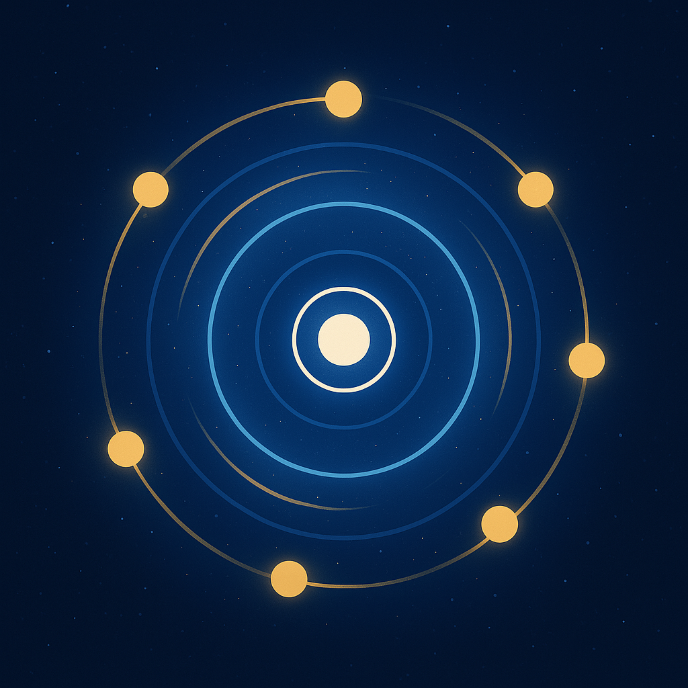

Urantia Book Desktop
📖 Foreword
🌀
The Central and Superuniverses
🌍 The Local Universe
📜 The History of Urantia
✝️ The Life and Teachings of Jesus
Favourite
🔖 Bookmarks
📔 Notes
🧰 More Applications
Exit
Light
Theme
Copy
🔍Search
Save
🖊️Highlight
Color
🔊 Read Aloud
💾 Export
%
Copy
🔍Search
Save
🖊️Highlight
Color
🔊 Read Aloud
💾 Export
Comment Note
Save
Cancel
Select Items
×
Action completed
✖
📝 Notes
No note available yet!